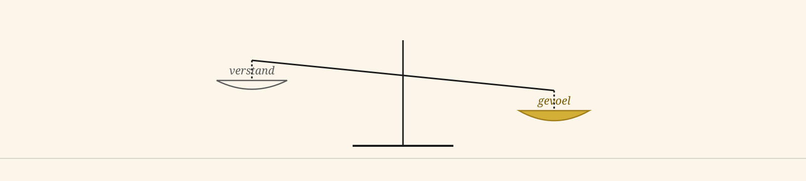

Het Open Vizier · Ausgabe Führung
Eine Zeitung für Denken ohne Scheuklappen

★ Ausgabe Führung
Zwölf Artikel, die die schärfste politische und organisatorische Frage unserer Zeit ausarbeiten: wer führt womit. Die Verstandesführung, die heute in Mode ist, lähmt den Organismus, den sie leitet. Gefühlsführung — Urgefühl, Mut, Menschenkenntnis — ist das, was wirklich bewegt.
★ Die These dieser Ausgabe
Die Verstandesführung, die seit den neunziger Jahren dominant geworden ist, hat eine bestimmte Art von Manager hervorgebracht: datengetrieben, risikoscheu, juristisch eingebettet und vor allem ängstlich vor dem Urteil seines Umfelds. Das Ergebnis ist eine Führung, die viel berichtet und wenig bewegt.
Gefühlsführung ist das ältere, ursprünglichere Modell. Die Führungskraft, die weiß, was gut ist für die Menschen, die sie führt — nicht weil eine Tabellenkalkulation es ihr sagt, sondern weil ihr Urgefühl ihr das Signal gibt. Sie wagt es, zu entscheiden, bevor die Zahlen vollständig sind. Sie wagt es, zu korrigieren, wenn sich herausstellt, dass sie falsch lag.
Verstandesführung liefert Manager. Gefühlsführung liefert Führungskräfte. Eine Organisation braucht beides, aber in der richtigen Reihenfolge.
★ I · Die Grundlage
Vier Artikel, die das Prinzip erklären — was das Urgefühl ist, wie es in den drei Hirnschichten wirkt und warum ein Mensch, der hauptsächlich aus seinem präfrontalen Kortex heraus führt, kein Führungskraft ist, sondern ein Manager.
Ausgabe 3 · Grundlage
Das Prinzip, das allen späteren Schichten vorausgeht. Wie das Urgefühl entsteht, was es tut und warum jede gute Führungskraft mehr damit arbeitet, als sie zugibt.
Grundlagenartikel lesen →Ausgabe 3 · Struktur
Reptil, Säugetier, Mensch — eine Führungskraft, die nur aus der dritten Schicht heraus operiert, verfehlt zwei Drittel ihrer Kapazität. Die drei Hirnschichten als Werkzeug für die Führungskraft, die alle drei nutzen will.
Struktur lesen →Manifest · Aufruf
Ein offener Aufruf, dem Urgefühl seinen Platz in Verwaltung, Bildung und Wirtschaft zurückzugeben. Nicht als esoterischer Begriff, sondern als konkretes Arbeitsinstrument, das die Verstandesführung verbannt hat.
Manifest lesen →Ausgabe 3 · Kommunikation
Wie zwei Führungskräfte miteinander über eine Schicht kommunizieren, die keiner von beiden explizit benennt. Warum eine gute Führungskraft in einer Sitzung mehr Informationen aus dem Ton gewinnt als aus den Worten.
Über Kommunikation lesen →★ II · Die Praxis
Drei Artikel, die zeigen, wie Gefühlsführung in der Praxis aussieht. Ein CEO, der damit führt, das Urgefühl als tägliches Werkzeug in sechs Berufen und die treffende Metapher davon, wer auf dem Bock sitzt und wer am Gepäckträger.
Ausgabe 4 · Schlüsselartikel
Der Schlüsselartikel dieser Ausgabe. Ein guter CEO führt aus seinem Urgefühl heraus, nicht aus der Angst vor dem Vernunfturteil seines Umfelds. Was den Unterschied macht — für das Unternehmen, für die Menschen und für die Führungskraft selbst.
Über den CEO lesen →Ausgabe 3 · Berufspraxis
Konkret und direkt: wie das Urgefühl in sechs verschiedenen Berufen wirkt — vom Arzt bis zum Lehrer, vom Unternehmer bis zum Handwerker. Nicht nur für Führungskräfte, sondern für jeden, der überhaupt etwas zu sagen hat.
Über die Berufspraxis lesen →Triptychon · Juni 2026
Ein Triptychon über drei Arten von Führung ohne Subventionsabhängigkeit. Wer sitzt auf dem Bock und wer am Gepäckträger — und was der Unterschied bedeutet für denjenigen, der die Richtung bestimmt, und für denjenigen, der mitfährt.
Triptychon lesen →★ III · Das Gegenmodell
Drei Artikel, die zeigen, was schiefläuft, wenn der Verstand die führende Rolle vom Gefühl übernimmt. Der Akteur, der sich selbst zur Regel macht, die Retrospektive einer Generation, die bei der Rationalisierung zu weit gegangen ist, und das Gegenmanifest.
Prinzip · System
Wer handelt, schafft die Regel. Ein Prinzip, das Verstandesführer strukturell vergessen — sie glauben, die Regel handele. Hier die scharfe Korrektur: ohne einen Akteur mit Urgefühl ist keine Regel anwendbar.
Prinzip lesen →Ausgabe 3 · Retrospektive
Rückblick auf das, was die Nachkriegsgenerationen weitergegeben haben und was nicht. Welche kostbaren Elemente in der übertriebenen Rationalisierung verloren gegangen sind — und welche wir zurückgewinnen können.
Retrospektive lesen →Ausgabe 2 · Manifest
Ein Manifest für eine demokratische Form, die über der Partei steht. Ein politisches System, in dem Gefühlsführung wieder erlaubt ist und in dem die Führungskraft sich gegenüber dem Menschen verantwortet, nicht gegenüber ihrem Parteivorstand.
Manifest lesen →★ IV · Die Beispiele
Zwei Artikel aus Ausgabe 5 über sieben konkrete Führungskräfte und sieben konkrete Werkzeuge — die Menschen, die Gefühlsführung in ihrer Arbeit unter Beweis gestellt haben, und die Instrumente, mit denen sie es getan haben.
Ausgabe 5 · sieben Menschen
Sieben Schweizer Führungskräfte, die in ihrer Laufbahn stets aus ihrem Urgefühl heraus gehandelt haben — und dem Kontinent damit an kritischen Momenten einen anderen Kurs gegeben haben. Was sie gemeinsam hatten und was wir von ihnen lernen können.
Über die sieben lesen →Ausgabe 5 · sieben Werkzeuge
Sieben Werkzeuge, mit denen die Carbon-Alert-Architektur aufgebaut wurde — nicht durch Management, sondern durch Führung. Die Instrumente, die den Unterschied machten, und die Art von Führungskraft, die sie in Händen hält.
Über die sieben lesen →Für Manager und CEOs: Diese Ausgabe ist kein Angriff auf die Rationalität. Sie ist eine Korrektur ihrer Überdosis. Der Verstand bleibt Ihr Motor — aber das Urgefühl ist Ihr Kompass. Wer ohne Kompass mit Vollgas fährt, kommt zu Schaden.
Für junge Führungskräfte: In Ihrer Ausbildung wird Ihnen gesagt, dass Daten und Prozesse das Wichtigste sind. Hier hören Sie, dass Sie auch noch etwas anderes haben — Ihr Urgefühl. Nutzen Sie es.
Für Coaches, HR-Fachleute und Managementausbilder: Hier ist der Stoff, um der Urgefühl-Schicht wieder einen Platz in der Führungskräfteentwicklung zu geben, die Sie begleiten. Ohne die Verstandesführung abzuschaffen — indem Sie die Gefühlsführung daneben und darüber stellen.